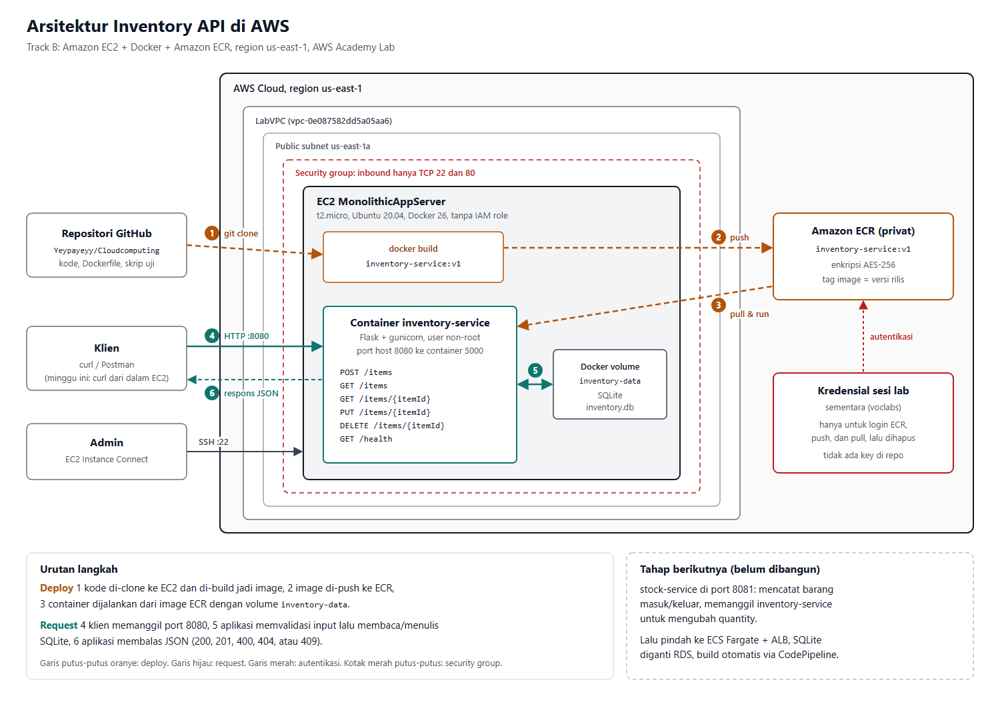

Banyak gudang kecil dan laboratorium masih mencatat stok di spreadsheet yang diedit bergantian. Akibatnya angka stok sering selisih, barang yang sama tercatat dua kali dengan nama berbeda, dan lokasi rak tidak jelas. Proyek ini menyediakan satu sumber data stok lewat HTTP, sehingga aplikasi lain cukup memanggil API. Target minggu ini:
Track B dipilih karena container menghilangkan masalah "jalan di laptop tapi tidak di server": image yang dites lokal adalah image yang sama yang ditarik EC2 dari ECR. Pemisahan per service juga menyiapkan jalan ke ECS pada minggu berikutnya. Konsekuensinya, server masih dikelola sendiri tanpa autoscaling/HA.
| Service | Status | Port host | Tanggung jawab |
|---|---|---|---|
inventory-service | dibangun | 8080 → 5000 | CRUD data barang, validasi, penyimpanan SQLite |
stock-service | direncanakan | 8081 → 5000 | Mencatat barang masuk/keluar lalu memanggil inventory-service untuk mengubah quantity |

Alur request (①–④): klien mengirim HTTP ke port 8080 → Docker meneruskan ke container :5000 → Flask memvalidasi body dan menjalankan query SQLite di volume → API membalas JSON beserta status code yang sesuai.
Alur deploy (a–d): git clone repo publik ke EC2 → docker build → docker push ke ECR → docker pull & run dengan volume dan --restart unless-stopped.
Keamanan:
| Field | Tipe | Aturan |
|---|---|---|
itemId | UUID | PK, dibuat server |
name | string | wajib |
sku | string | wajib, unik |
category | string | opsional |
quantity | integer | wajib, ≥ 0 |
location | string | opsional (gudang/rak) |
createdAt, updatedAt | ISO 8601 | diisi server (UTC) |
POST /items
{
"name": "Laptop Asus Vivobook 14",
"sku": "LPT-ASUS-014",
"category": "Elektronik",
"quantity": 10,
"location": "Gudang A - Rak 2"
}
→ 201 Created + itemId, createdAt, updatedAt
| CRUD | Endpoint | Body | Sukses | Error |
|---|---|---|---|---|
| Create | POST /items | name, sku, quantity (+opsional) | 201 + item | 400 field kurang/tipe salah · 409 SKU duplikat |
| Read | GET /items | — | 200 {count, items} | — |
| Read | GET /items/{itemId} | — | 200 + item | 404 tidak ditemukan |
| Update | PUT /items/{itemId} | field yang diubah (parsial) | 200 + item baru | 400 · 404 · 409 |
| Delete | DELETE /items/{itemId} | — | 200 + pesan | 404 tidak ditemukan |
Plus GET /health untuk cek konektivitas. Diuji otomatis via test_app.py dan di server via scripts/crud-test.sh.
| # | Langkah | Hasil | Screenshot |
|---|---|---|---|
| 1 | EC2 MonolithicAppServer berjalan di LabVPC | Running, 2/2 checks | 01, 10 |
| 2 | Clone repo dan install Docker di EC2 | Berhasil, Docker 26.1.3 | 02 |
| 3 | Build image inventory-service:v1 | Berhasil, 134 MB | 03 |
| 4 | Buat repo ECR privat dan push image | v1 tersimpan, digest sha256:ccf7… | 04, 05, 09 |
| 5 | Pull dan run container dari ECR | Up, /health = ok | 06 |
| 6 | Uji CRUD end-to-end (curl) | 201 · 400 · 200 · 200 · 404 | 07, 08 |
| 7 | Verifikasi security group inbound | Hanya TCP 22 dan 80 | 11 |
Kendala: run pertama gagal (unable to open database file) karena VOLUME /data dideklarasikan sebelum chown. Diatasi dengan mengubah owner volume di host, dan Dockerfile di repo sudah diperbaiki.
stock-service, lalu ECS Fargate + ALB (/items*, /stock*).